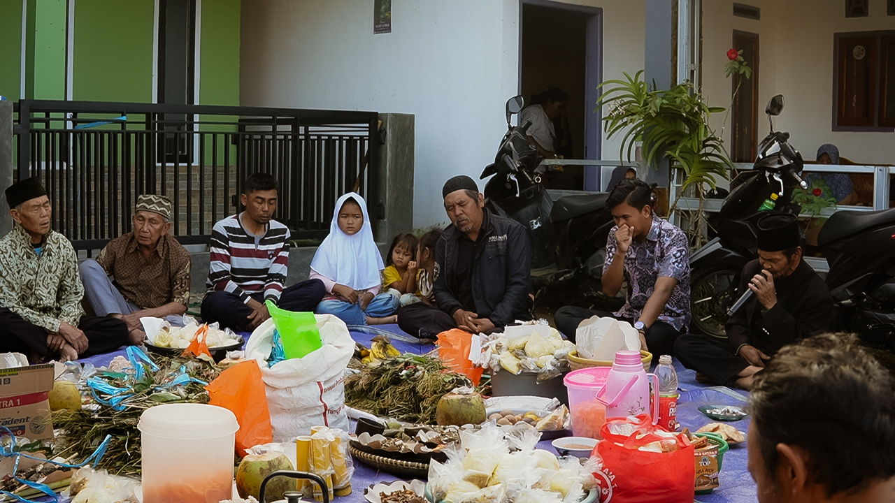
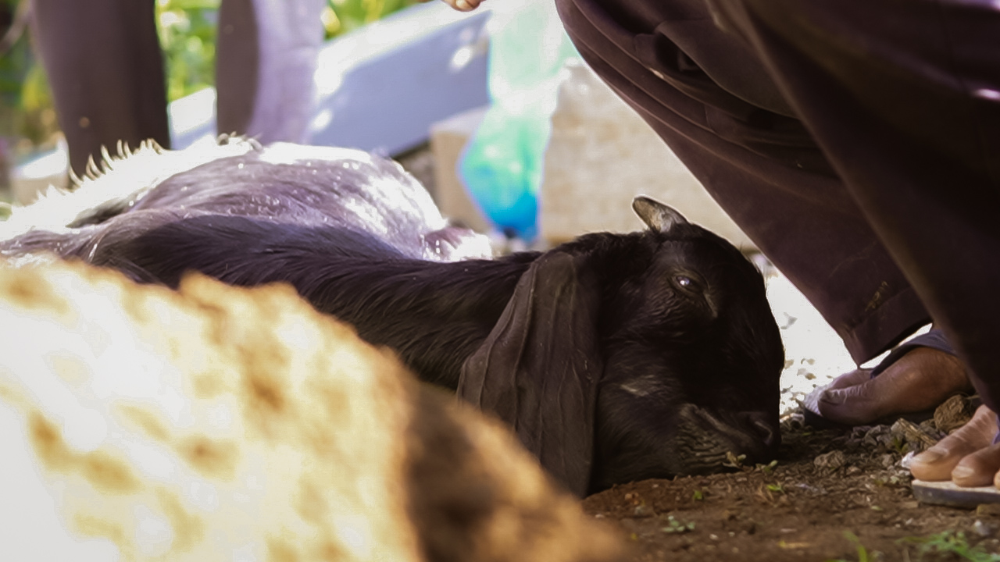
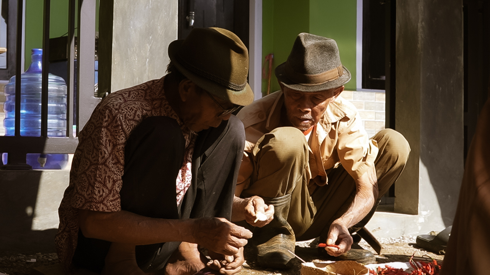
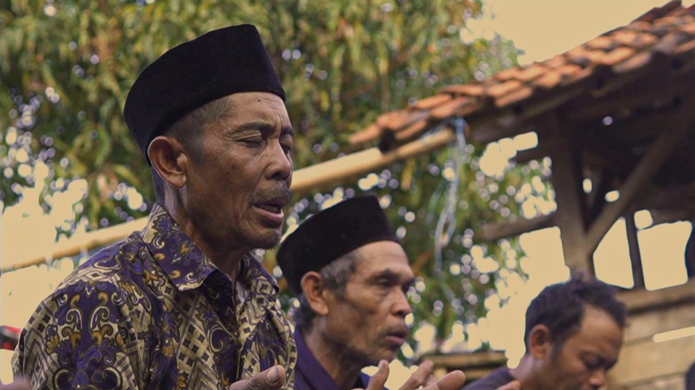
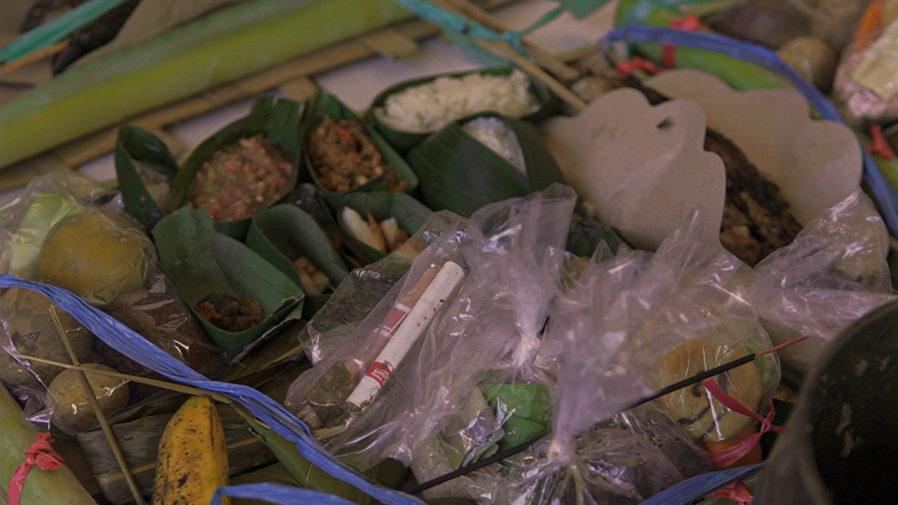

Antara Batu Jeung Doa
In Kadakajaya Village, Tanjungsari, Sumedang, the community still maintains an ancient tradition called Hajat Lembur, an annual ritual expressing gratitude for the harvest and the safety of the village. Through prayer, offerings, and togetherness, residents unite their spiritual values and local wisdom. This documentary explores the meaning behind each symbol, from the yellow bamboo to the tumpeng rice cone. More than just a ritual, Hajat Lembur reflects the brotherhood and togetherness of the residents in maintaining social and cultural harmony amidst changing times.




